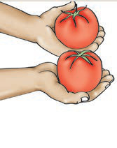
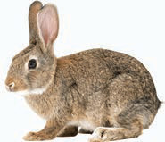

3.
These are tomatoes. I ___ two tomatoes.

4.
This is Salum. He ___ a bicycle.

5.
I ___ many books.

6.
I ___ a bunch of flowers.

7.
This hare ___ no tail.

8.
This is a duck. It ___ wings.
27

These are tomatoes. I ___ two tomatoes.
This is Salum. He ___ a bicycle.
I ___ many books.
I ___ a bunch of flowers.

This hare ___ no tail.
This is a duck. It ___ wings.